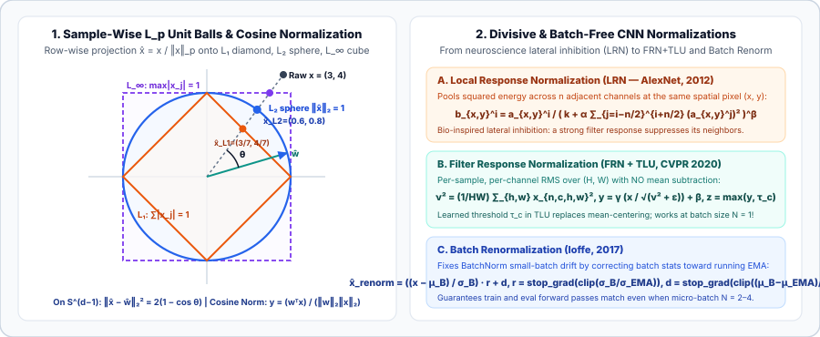

Vector, Hyperspherical, and Divisive Normalizations: $L_p$ Unit Norms, Cosine Normalization, LRN, FRN, and Batch Renorm
Switch from column-wise feature scaling to row-wise vector normalization: project samples onto the $L_1$ simplex, $L_2$ hypersphere, or $L_\infty$ hypercube; replace unbounded dot products with Cosine Normalization and temperature-scaled hyperspherical logits; and trace divisive CNN normalizations from AlexNet’s LRN to Filter Response Normalization (FRN) and Batch Renormalization.
Chapters 01 and 02 normalized the data matrix $X \in \mathbb R^{N \times d}$ down each column $j$ across the $N$ samples so that different physical measurement units share a common scale. Equally fundamental is row-wise (sample-wise) normalization, which normalizes each sample vector $x \in \mathbb R^d$ across its $d$ coordinates independently of every other sample in the dataset. This single idea powers TF-IDF document retrieval, $L_2$-normalized embeddings in CLIP and vector databases, Cosine/ArcFace classifiers, AlexNet’s Local Response Normalization (LRN), and modern Filter Response Normalization (FRN).
1. Sample-Wise $L_p$ Vector Normalization ($L_1$, $L_2$, and $L_\infty$)
For any sample vector $x = (x_1, \dots, x_d)^\top \in \mathbb R^d$ and any $p \ge 1$, the $L_p$ norm and $L_p$ unit-normalized vector (`sklearn.preprocessing.Normalizer`, `torch.nn.functional.normalize`) are:
Geometrically, $x \mapsto x / \|x\|_p$ radially projects every non-zero vector onto the surface of the unit $L_p$ ball $\mathcal B_p = \{u \in \mathbb R^d : \|u\|_p = 1\}$:
- 1. $L_1$ Normalization ($p = 1$, Taxicab / Manhattan / Simplex Projection):
$$\|x\|_1 = \sum_{j=1}^d |x_j|,\qquad \hat x_j^{(1)} = \frac{x_j}{\sum_{k=1}^d |x_k|}.$$When $x_j \ge 0$ (such as word counts, histograms, attention weights, or pixel intensities), $L_1$ normalization projects $x$ directly onto the probability simplex $\Delta^{d-1} = \{p \in \mathbb R_{\ge 0}^d : \sum_{j=1}^d p_j = 1\}$, making a 500-word article and a 5,000-word article with identical topic proportions map to the exact same vector.
- 2. $L_2$ Normalization ($p = 2$, Euclidean / Hyperspherical Projection):
$$\|x\|_2 = \sqrt{\sum_{j=1}^d x_j^2},\qquad \hat x = \frac{x}{\|x\|_2 + \varepsilon} \in \mathbb S^{d-1}.$$Every $L_2$-normalized vector lies on the unit hypersphere $\mathbb S^{d-1}$ ($\|\hat x\|_2 = 1$). On $\mathbb S^{d-1}$, squared Euclidean distance and cosine similarity $\cos\theta = \hat x^\top \hat y$ become monotonically equivalent:$$\|\hat x - \hat y\|_2^2 = \underbrace{\|\hat x\|_2^2}_{1} + \underbrace{\|\hat y\|_2^2}_{1} - 2\hat x^\top \hat y = 2(1 - \cos\theta).$$Furthermore, differentiating $\hat x = x / \|x\|_2$ with respect to $x$ yields the symmetric tangent-space projection Jacobian:$$\frac{\partial \hat x}{\partial x} = \frac{1}{\|x\|_2}\left(I_d - \hat x \hat x^\top\right),\qquad \nabla_x\mathcal L = \frac{1}{\|x\|_2}\Big(\nabla_{\hat x}\mathcal L - \langle \hat x, \nabla_{\hat x}\mathcal L\rangle \hat x\Big),$$which strips out the radial component along $\hat x$ and scales gradients inversely with $\|x\|_2$.
- 3. $L_\infty$ Normalization ($p \to \infty$, Chebyshev / Peak Normalization):
$$\|x\|_\infty = \lim_{p\to\infty}\left(\sum_{j=1}^d |x_j|^p\right)^{1/p} = \max_{1\le j\le d} |x_j|,\qquad \hat x_j^{(\infty)} = \frac{x_j}{\max_k |x_k|} \in [-1, 1],$$which projects $x$ onto the boundary of the unit hypercube $[-1, 1]^d$ so its largest coordinate in magnitude equals $\pm 1$ (standard peak normalization in audio waveforms and activations before low-bit quantization).

2. Cosine Normalization and Temperature-Scaled Hyperspherical Logits
In a standard neural layer, pre-activation $z = w^\top x + b = \|w\|_2 \|x\|_2 \cos\theta + b$ mixes three quantities: weight norm $\|w\|_2$, activation norm $\|x\|_2$, and the angle $\theta$ between $w$ and $x$. Cosine Normalization (Luo et al., 2017) normalizes both the weight vector $w$ and the input vector $x$ by their $L_2$ norms so the neuron fires purely according to their cosine similarity:
In classification headers and contrastive embeddings (NormFace, Wang et al., 2017; CosFace; ArcFace; SimCLR; CLIP), $L_2$-normalizing the feature embedding $\hat x = x / \|x\|_2$ and class prototype (or text embedding) $\hat w_k = w_k / \|w_k\|_2$ eliminates radial norm bias (where frequent classes or easy images grow huge $\|w_k\|_2$ or $\|x\|_2$). However, there is a critical catch if you plug raw cosines $\cos\theta_k \in [-1, 1]$ directly into Softmax cross-entropy:
Why temperature $\tau = 1/s$ is mathematically mandatory: If $s = 1$ ($\tau = 1$), even a perfect match ($\cos\theta_y = +1$) against $K-1$ orthogonal classes ($\cos\theta_k = 0$) achieves a maximum possible probability of at most
For $K = 1000$ classes (ImageNet), $p_y^{\max}(s=1) = \frac{2.718}{1001.718} \approx 0.0027$, so the cross-entropy loss $-\ln p_y$ can never drop below $5.91$! Multiplying the cosine logits by an inverse temperature scale $s = 1/\tau \in [16, 64]$ (or CLIP’s learnable $\ln(1/\tau)$ clipped at $s \le 100$) restores the dynamic range of the softmax simplex on $\mathbb S^{d-1}$.
3. Divisive Normalization in Vision: Local Response Normalization (LRN)
Before Batch Normalization (2015), early deep CNNs drew directly from computational neuroscience: in primary visual cortex (V1), divisive normalization (Heeger, 1992; Carandini & Heeger, 2012) models lateral inhibition, where a neuron’s firing rate is divided by the summed squared activity of neighboring neurons across spatial positions or orientation channels.
In AlexNet (Krizhevsky, Sutskever, & Hinton, 2012), Local Response Normalization (LRN) (`nn.LocalResponseNorm`) is applied after $\operatorname{ReLU}$ activations $a_{x,y}^i$ at spatial location $(x,y)$ and channel $i$ by pooling over $n$ adjacent channels in the same layer:
with hyperparameters $k = 2, n = 5, \alpha = 10^{-4}, \beta = 0.75$. Because $\operatorname{ReLU}(z) = \max(0, z)$ is unbounded above, LRN prevents a single high-gain filter from dominating all nearby channels and creates local competition between filters. Its companion, Local Contrast Normalization (LCN) (Jarrett et al., 2009), additionally subtracts the local spatial-neighborhood mean before dividing by the local spatial standard deviation. Today, LRN is largely historical—superseded in CNNs by BatchNorm, GroupNorm, and Filter Response Normalization—because arbitrary channel ordering makes "adjacent channels $i \pm n/2$" an artificial grouping.
4. Filter Response Normalization (FRN) + Thresholded Linear Unit (TLU)
Can we design a normalization layer for CNNs that has zero dependency on the mini-batch size $N$ (unlike BatchNorm) and never suffers from channel-grouping artifacts (unlike GroupNorm or LRN), while matching or beating BatchNorm at large batch sizes? Singh and Krishnan (CVPR 2020) achieved this with Filter Response Normalization (FRN):
- Step 1 — Per-Filter Spatial RMS Normalization (No Mean Subtraction): For feature map $x \in \mathbb R^{N \times C \times H \times W}$, compute the mean squared energy $\nu_{n,c}^2$ of each sample $n$ and channel $c$ across its spatial plane $(H, W)$:
$$\nu_{n,c}^2 = \frac{1}{HW}\sum_{h=1}^H \sum_{w=1}^W x_{n,c,h,w}^2,\qquad \hat x_{n,c,h,w} = \frac{x_{n,c,h,w}}{\sqrt{\nu_{n,c}^2 + \varepsilon}},\qquad y_{n,c,h,w} = \gamma_c \hat x_{n,c,h,w} + \beta_c.$$Notice that FRN is the 2D spatial equivalent of RMSNorm: it intentionally omits subtracting the spatial mean $\mu_{n,c}$ (which in InstanceNorm wipes out global contrast information).
- Step 2 — Thresholded Linear Unit (TLU): Because FRN does not subtract the mean, $y_{n,c,h,w}$ can have an arbitrary constant offset relative to $\operatorname{ReLU}$’s hard zero cutoff. FRN pairs the normalized output with a per-channel learnable threshold $\tau_c \in \mathbb R$:
$$z_{n,c,h,w} = \operatorname{TLU}(y_{n,c,h,w}) = \max(y_{n,c,h,w},\, \tau_c) = \operatorname{ReLU}(y_{n,c,h,w} - \tau_c) + \tau_c.$$
5. Batch Renormalization (Ioffe, 2017)
When you must keep an existing BatchNorm architecture but train with small micro-batches ($N = 2\text{–}4$) or non-i.i.d. batches, standard BatchNorm fails because the training pass uses noisy mini-batch stats $(\mu_B, \sigma_B)$ while evaluation uses the running EMA stats $(\mu_{\text{EMA}}, \sigma_{\text{EMA}})$. Batch Renormalization (Ioffe, 2017) bridges the two during training via an affine correction:
Notice the algebraic identity when $r$ and $d$ are unclamped: $\frac{x_i - \mu_B}{\sigma_B}\frac{\sigma_B}{\sigma_{\text{EMA}}} + \frac{\mu_B - \mu_{\text{EMA}}}{\sigma_{\text{EMA}}} = \frac{x_i - \mu_{\text{EMA}}}{\sigma_{\text{EMA}}}$! Thus the forward pass sees activations standardized by the stable EMA statistics, while treating $(r, d)$ as constants (`stop_grad`) preserves the exact mini-batch Jacobian during backpropagation.
6. Implement $L_p$ Norm, Cosine Linear, and FRN+TLU in PyTorch
import torch
import torch.nn as nn
import torch.nn.functional as F
class CosineLinear(nn.Module):
"""Cosine Normalization layer with learnable inverse-temperature scale s = exp(log_s)."""
def __init__(self, in_features: int, out_features: int, init_scale: float = 20.0):
super().__init__()
self.weight = nn.Parameter(torch.randn(out_features, in_features))
self.log_scale = nn.Parameter(torch.tensor(init_scale).log())
def forward(self, x: torch.Tensor) -> torch.Tensor:
x_hat = F.normalize(x, p=2, dim=-1, eps=1e-6)
w_hat = F.normalize(self.weight, p=2, dim=-1, eps=1e-6)
scale = self.log_scale.exp().clamp(max=100.0)
return scale * (x_hat @ w_hat.T)
class FilterResponseNormTLU2d(nn.Module):
"""Filter Response Normalization (FRN) + Thresholded Linear Unit (TLU) for (N, C, H, W)."""
def __init__(self, num_channels: int, eps: float = 1e-6):
super().__init__()
self.gamma = nn.Parameter(torch.ones(1, num_channels, 1, 1))
self.beta = nn.Parameter(torch.zeros(1, num_channels, 1, 1))
self.tau = nn.Parameter(torch.zeros(1, num_channels, 1, 1))
self.eps = nn.Parameter(torch.tensor(eps), requires_grad=False)
def forward(self, x: torch.Tensor) -> torch.Tensor:
nu2 = x.pow(2).mean(dim=(2, 3), keepdim=True)
x_hat = x * torch.rsqrt(nu2 + self.eps.abs())
y = self.gamma * x_hat + self.beta
return torch.maximum(y, self.tau)
x = torch.tensor([[3.0, 4.0], [1.0, -1.0]])
print("L1 norm :", F.normalize(x, p=1, dim=-1).tolist())
print("L2 norm :", F.normalize(x, p=2, dim=-1).tolist())
print("L_inf :", F.normalize(x, p=float('inf'), dim=-1).tolist())7. Questions worth answering
Both divide by $\max |x|$, but along orthogonal axes of the data matrix $X \in \mathbb R^{N \times d}$! `MaxAbsScaler` normalizes each column $j$ across all $N$ training samples ($x_{i,j} / \max_n |x_{n,j}|$), requiring fitted training state. $L_\infty$ `Normalizer` normalizes each row $i$ across its $d$ features ($x_{i,j} / \max_k |x_{i,k}|$) independently per sample, requiring zero training state.
Only by a constant factor of $\sqrt{d}$ (plus RMSNorm’s learned elementwise gain $\gamma \in \mathbb R^d$): since $\operatorname{RMS}(x) = \sqrt{\frac{1}{d}\sum_{j=1}^d x_j^2} = \frac{\|x\|_2}{\sqrt{d}}$, we have $\frac{x}{\operatorname{RMS}(x)} = \sqrt{d}\,\frac{x}{\|x\|_2}$. Thus $L_2$ normalization places vectors on the sphere of radius $1$ (so each coordinate has expected variance $1/d$), whereas RMSNorm places vectors on the sphere of radius $\sqrt{d}$ (so each coordinate has expected variance $1$).
If gradients flowed through $r = \sigma_B/\sigma_{\text{EMA}}$ and $d = (\mu_B - \mu_{\text{EMA}})/\sigma_{\text{EMA}}$, the $\mu_B$ and $\sigma_B$ terms in the numerator and denominator of $\hat x^{\text{renorm}} = \frac{x - \mu_B}{\sigma_B} r + d$ would algebraically cancel during the backward pass too, losing the critical orthogonal-projection terms of the BatchNorm Jacobian that stabilize optimization!
Sources
Krizhevsky, Sutskever, and Hinton, ImageNet Classification with Deep Convolutional Neural Networks — LRN (NeurIPS 2012); Carandini and Heeger, Normalization as a Canonical Neural Computation (Nature Reviews Neuroscience, 2012); Luo et al., Cosine Normalization: Using Cosine Similarity Instead of Dot Product in Neural Networks (2017); Wang et al., NormFace: L2 Hypersphere Embedding for Face Verification (ACM MM 2017); Ioffe, Batch Renormalization: Towards Reducing Minibatch Dependence in Batch-Normalized Models (NeurIPS 2017); Singh and Krishnan, Filter Response Normalization Layer: Eliminating Batch Dependence in the Training of Deep Neural Networks (CVPR 2020).